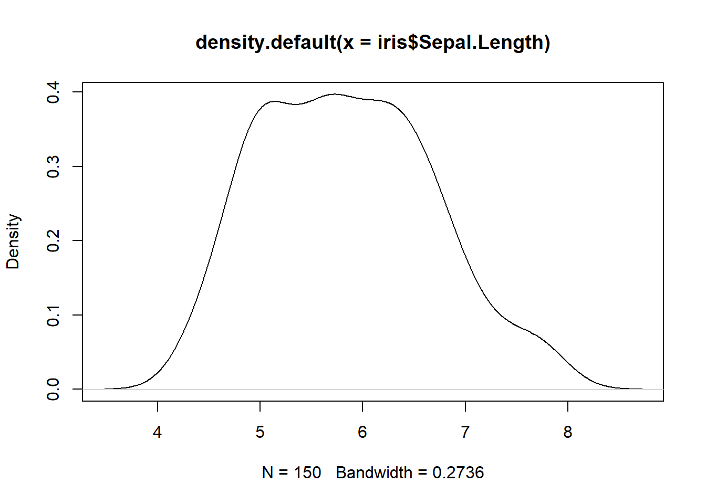
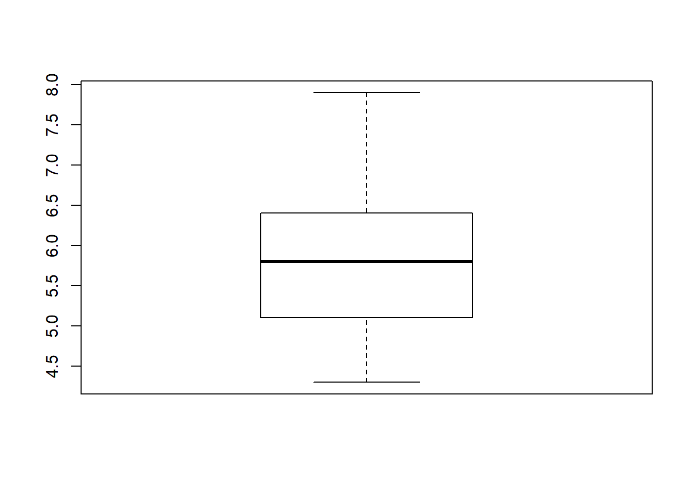
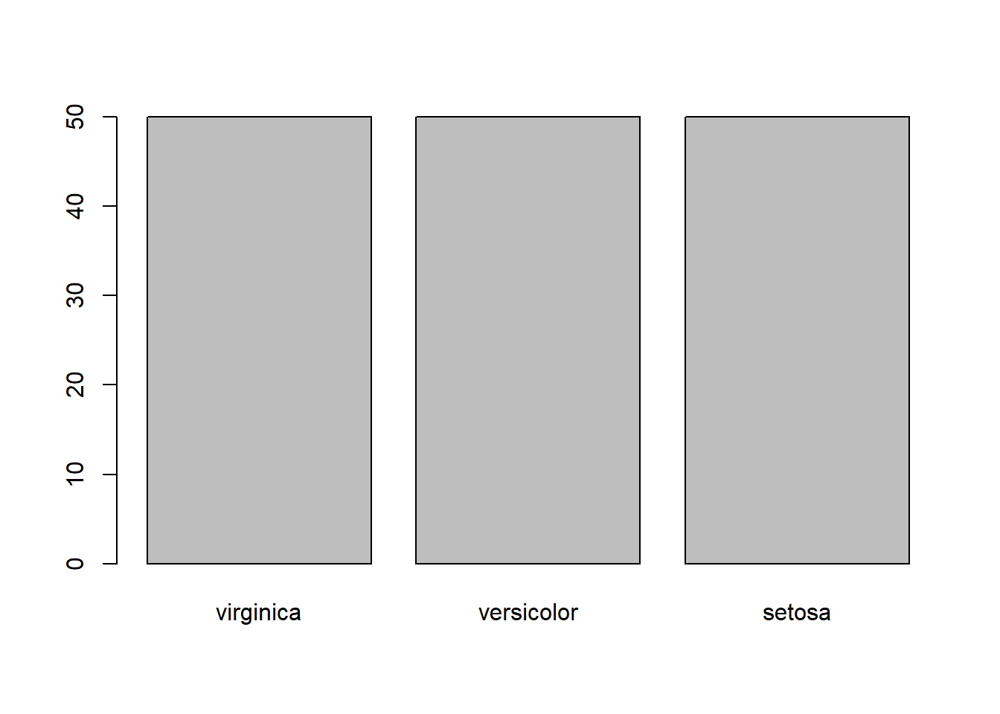
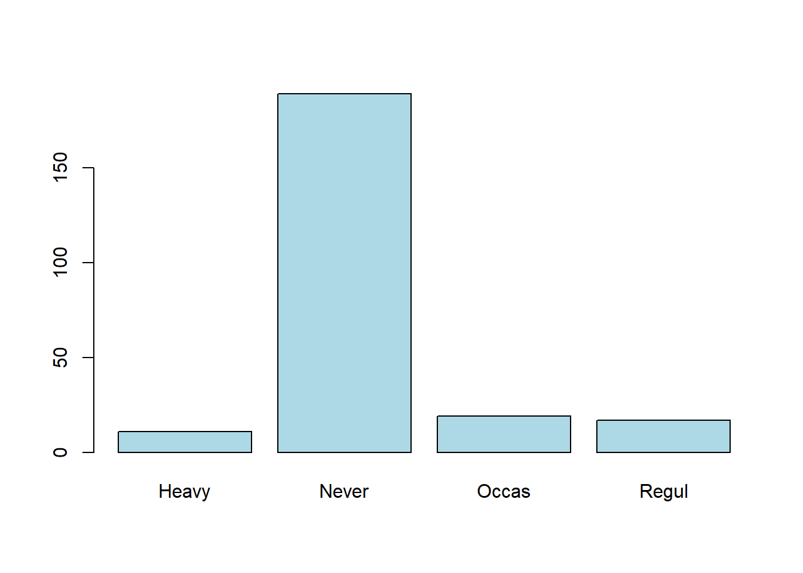

Chapter 6 Single variable Analysis
6.1 Numeric Variable
6.1.1 Histogram
hist(iris$Sepal.Length,col="darkred",breaks=30,border = "white",xlab = "Sepal.Length") 
# use ?hist to know more about other parameters and how you can change the title6.1.2 Density plot
plot(density(iris$Sepal.Length))
6.1.3 Box plot
boxplot(iris$Sepal.Length) ## box plot
6.1.4 Test of Mean
mean(iris$Sepal.Length)## [1] 5.843333If we had to test whether the mean of Sepal.Length was either = or < or > a particular value, we could use a t-test.
There are three assumptions of a one-sample t-test.
- Random sampling from a defined population
- Interval or ratio scale of measurement
- Population is normally distributed
t.test(iris$Sepal.Length,mu=5) # Ho: mu=5 ##
## One Sample t-test
##
## data: iris$Sepal.Length
## t = 12.473, df = 149, p-value < 2.2e-16
## alternative hypothesis: true mean is not equal to 5
## 95 percent confidence interval:
## 5.709732 5.976934
## sample estimates:
## mean of x
## 5.843333t.test(iris$Sepal.Length,mu=5,alternative="greater",conf.level = .99) # Ho: mu=5 ##
## One Sample t-test
##
## data: iris$Sepal.Length
## t = 12.473, df = 149, p-value < 2.2e-16
## alternative hypothesis: true mean is greater than 5
## 99 percent confidence interval:
## 5.684336 Inf
## sample estimates:
## mean of x
## 5.843333Interpretation: Since the p-value is less than .01, we have evidence to suggest that the mean of Sepal.Length is greater than 5.
6.2 Factor variable
6.2.1 Bar plot
plot(iris$Species)
6.2.2 Pie Chart - FYI Do not use
counts=table(iris$Species) ## get counts
labs=paste(iris$Species,counts)## create labels
pie(counts,labels=labs) ## plot
6.2.3 One factor-variable Chi-square goodness-of-fit test
This is useful to determine whether a frequency distribution (of a factor variable) fits well an expected frequency distribution. To illustrate this, let us use the survey dataset (from an R packages named MASS). The data and their description have been provided in the folder for datasets.
** Names of variables**:
load("data/survey.Rda")
names(survey)## [1] "Sex" "Wr.Hnd" "NW.Hnd" "W.Hnd" "Fold" "Pulse" "Clap"
## [8] "Exer" "Smoke" "Height" "M.I" "Age"** Structure of the dataframe**
str(survey)## 'data.frame': 237 obs. of 12 variables:
## $ Sex : Factor w/ 2 levels "Female","Male": 1 2 2 2 2 1 2 1 2 2 ...
## $ Wr.Hnd: num 18.5 19.5 18 18.8 20 18 17.7 17 20 18.5 ...
## $ NW.Hnd: num 18 20.5 13.3 18.9 20 17.7 17.7 17.3 19.5 18.5 ...
## $ W.Hnd : Factor w/ 2 levels "Left","Right": 2 1 2 2 2 2 2 2 2 2 ...
## $ Fold : Factor w/ 3 levels "L on R","Neither",..: 3 3 1 3 2 1 1 3 3 3 ...
## $ Pulse : int 92 104 87 NA 35 64 83 74 72 90 ...
## $ Clap : Factor w/ 3 levels "Left","Neither",..: 1 1 2 2 3 3 3 3 3 3 ...
## $ Exer : Factor w/ 3 levels "Freq","None",..: 3 2 2 2 3 3 1 1 3 3 ...
## $ Smoke : Factor w/ 4 levels "Heavy","Never",..: 2 4 3 2 2 2 2 2 2 2 ...
## $ Height: num 173 178 NA 160 165 ...
## $ M.I : Factor w/ 2 levels "Imperial","Metric": 2 1 NA 2 2 1 1 2 2 2 ...
## $ Age : num 18.2 17.6 16.9 20.3 23.7 ...Plotting a single factor variable, say the smoking habits of students provided in the Smoke variable.
plot(survey$Smoke,col="lightblue")
Let us now suppose that we wanted to test whether in the observed frequency distribution can help us make the inference that in the population of students, 70% of students were non-smokers and the remaining 30% were equally split among the other three groups.
Null: The observed frequency distribution fits well with the expected frequency distribution. Alternate: The observed frequency distribution does not fit well with the expected frequency distribution.
Assumptions of the test are discussed in: http://www.basic.northwestern.edu/statguidefiles/gf-dist_ass_viol.html
How many observations are present in each of the four levels of the Smoker variable? - Observed frequency distribution
obsfreq=table(survey$Smoke)
obsfreq##
## Heavy Never Occas Regul
## 11 189 19 17Observed frequency distribution (in proportions)
prop.table(obsfreq)##
## Heavy Never Occas Regul
## 0.04661017 0.80084746 0.08050847 0.07203390Expected frequency distribution (in proportions)
expprop=c(.1,.7,.1,.1)Chi-square test of goodness of fit test
chisq.test(obsfreq,p=expprop)##
## Chi-squared test for given probabilities
##
## data: obsfreq
## X-squared = 12.898, df = 3, p-value = 0.004862Interpretation: Since the p-value is less than .01 (to yield a 99% confidence level), we find evidence to suggest that the two distributions are different. (The two distributions are the observed frequency distribution and the expected frequency distribution.)
6.3 One factor variable - t-test one sample proportion
summary(survey$M.I)## Imperial Metric NA's
## 68 141 28Let us suppose we were testing a hypothesis that the proportion of students who would indicate their responses in the Imperial units (feet/inches, in contrast to the metric units - centimeters/meters) would be something other than 30%. We find that there are 68 of them who provide a response in that unit. Do we have evidence in favor of the hypothesis that there would be a value different from 30%?
binom.test(table(survey$M.I),p=.3)##
## Exact binomial test
##
## data: table(survey$M.I)
## number of successes = 68, number of trials = 209, p-value = 0.4504
## alternative hypothesis: true probability of success is not equal to 0.3
## 95 percent confidence interval:
## 0.2623404 0.3934153
## sample estimates:
## probability of success
## 0.3253589Conclusion: We do not have evidence that the proportion is different from .3 (why? checkout the p-value. and the confidence interval should not contain the observed probability.)
What if we were testing the hypothesis that the proportion will be greater than .3?
binom.test(table(survey$M.I),p=.3,alternative = "greater")##
## Exact binomial test
##
## data: table(survey$M.I)
## number of successes = 68, number of trials = 209, p-value = 0.2329
## alternative hypothesis: true probability of success is greater than 0.3
## 95 percent confidence interval:
## 0.2717783 1.0000000
## sample estimates:
## probability of success
## 0.3253589Yet again, we don’t have any evidence that the mean is greater than .3 (although the observed proportion is .325, it is not “statistically significant” )